Are you interested in learning how to visualize your data using R? In this Programming Café session, you will gain an overview of possible visualizations and get to know where to find additional resources. Rather than reinventing the wheel, this session will draw heavily on content created by the Data Carpentries in their session on Data Visualisation with R and the material created by Antonio Schettino in his workshop on R and the tidyverse.
Rows: 1155 Columns: 35
── Column specification ────────────────────────────────────────────────────────
Delimiter: ","
chr (15): country, jp_part_time, jp_later, par1_for_whom, par1_work, par1_la...
dbl (20): year, mat_m_ld_bb, mat_m_ld_ab, mat_v_ld_bb, mat_v_ld_ab, co_ld, j...
ℹ Use `spec()` to retrieve the full column specification for this data.
ℹ Specify the column types or set `show_col_types = FALSE` to quiet this message.
Our goal today is to explore how the paid parental leave duration (in months) changed over the years per country, as well as whether specific parental groups (e.g., mothers or co-parents) have more or different rights to earn extra money during their leave.
To be able to show this information in a plot, we first want to look at the data at hand.
For the first question, we will mainly focus on country(two-letter country code), par1_ld (Paid parental leave duration (maximum duration)) and year (1970 to 2024).
Let’s create a basic plot with the year (year) and parental leave (par1_ld) duration to see whether the length of parental leave increases over time:
plot(eplp$year, eplp$par1_ld,main ="Base R Scatterplot",xlab ="Year",ylab ="Paid parental leave duration in months")
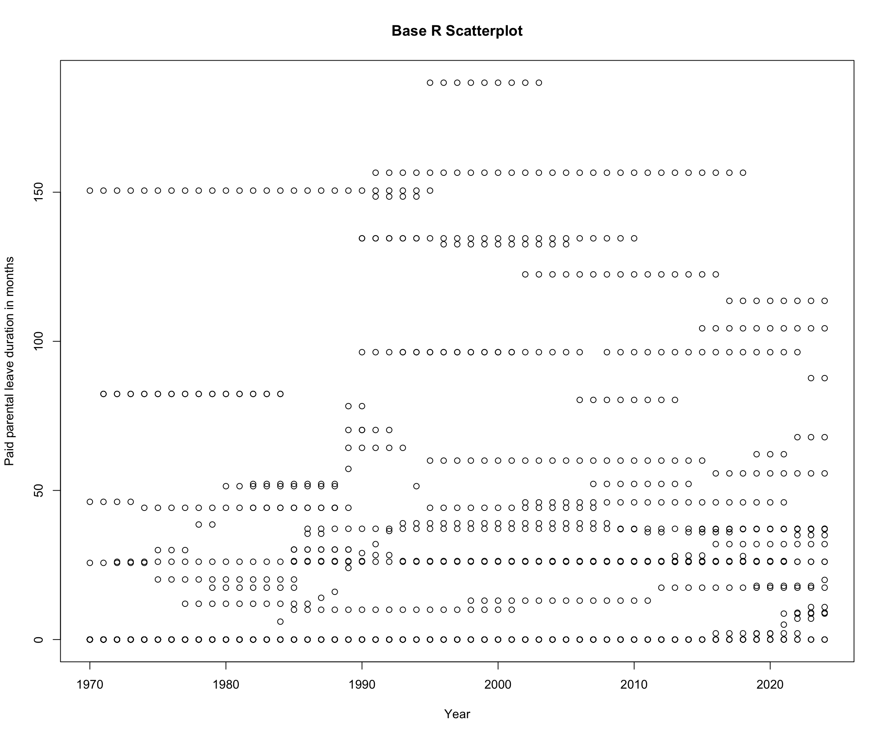
Oh! That is not very readable, is it? Maybe ggplot2 can help us with this.
What is ggplot2?
ggplot2 is an R package that helps you create graphics. Through its underlying grammar (or syntax), it allows you to compose graphs by stacking independent components on top of each other. This makes it very powerful. You can think of it as working in layers: first you create an empty canvas for the plot, then you add the data and geometry, followed by the title, axis labels, colors, and themes. Almost every element is highly customizable. In today’s session, we will get to know some of the functionalities.
Let’s start by creating an empty canvas. aes stands for aesthetics in this context and we add our x and y value.
eplp |>ggplot(aes(x = year, y = par1_ld))
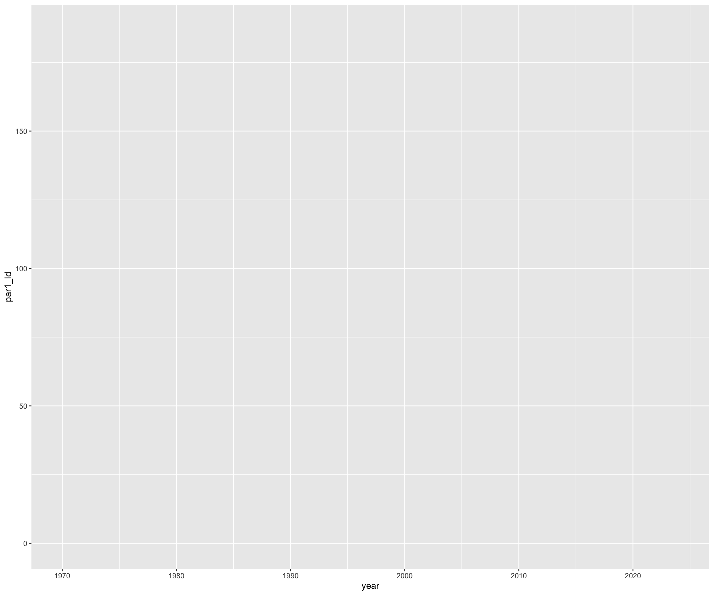
Next, we want to add the geometric layer (geom). The geometric layer can be a plot with points, lines or boxes. I will use points for now. A plot must have at least one geom, but there is no upper limit. You can add a geom to a plot using the + operator.
eplp |>ggplot(aes(x = year, y = par1_ld)) +geom_point()
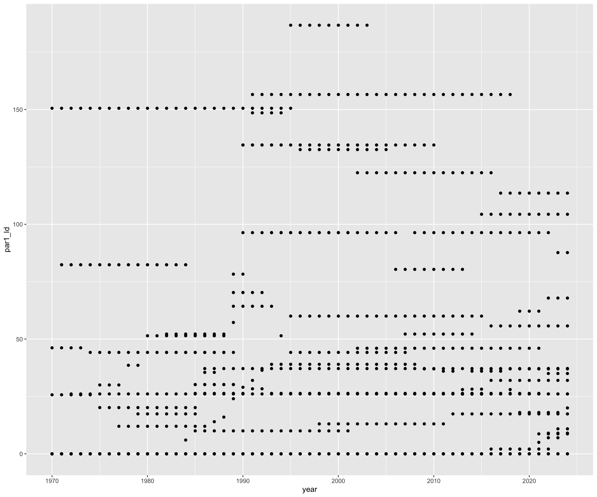
To make our lives easier and be able to recall the plot easily, we can assign the plot to a variable using <-.
# Assign plot to a variableeplp_plot <- eplp |>ggplot(aes(x = year, y = par1_ld))# Now we can add the next layers using the variableeplp_plot +geom_point()
Building your plot – geom_point() and geom_jitter()
The plot that we created till now is not very readable. It seems as if some of the points that we created are overlapping. A possible solution to make more points visible, is to use either change the transparency of the points or jitter the location of the points.
Let’s try changing the transparency. We can change the transparency of the points using the alpha argument. Values of alpha range from 0 to 1 (transparent to non-transparent).
eplp_plot +geom_point(alpha =0.5)
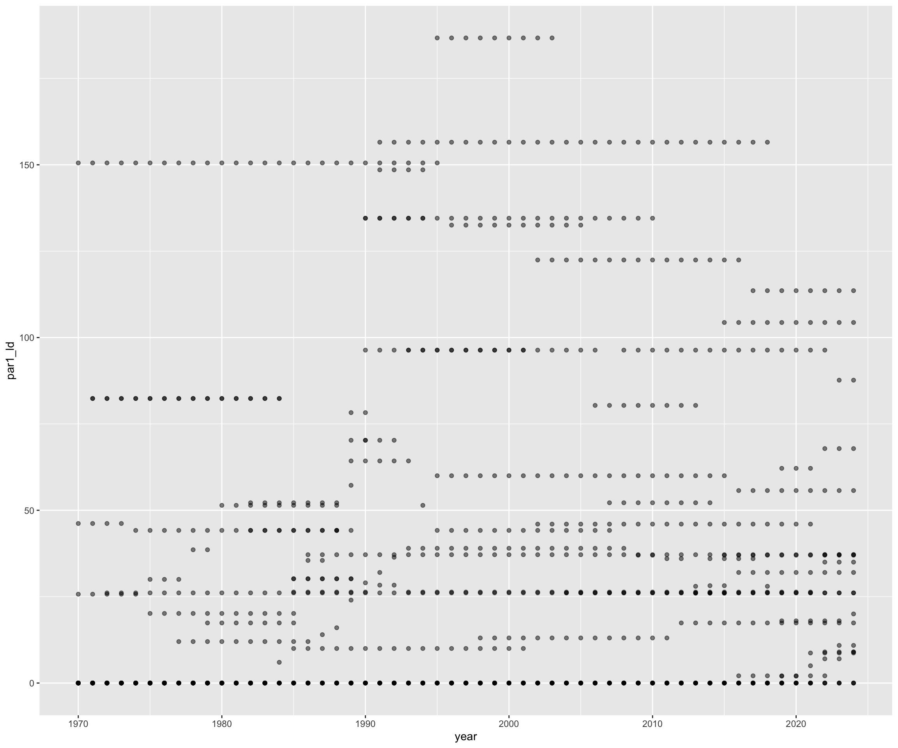
We can see that some points are less transparent than others. This means that multiple data points overlap here.
To make the differences even more visible, we could use jittering. Jittering adds a small amount of random variation to the positions of the points. You can think of it as slightly shaking a graph so that overlapping points spread out and become visible.
eplp_plot +geom_jitter()
Geom_jitter() also enables us to change the width and height of the jittering and with this, control the randomness a bit. Let’s combine the transparency and the jittering.
This already looks better, right? I’m not sure whether this graph helps us answer our research question, though.
Building your plot – geom_boxplot()
As of now, we have seen geom_point() and geom_jitter(), but to be able to see the leave duration per year and country, we will try out geom_boxplots(). I will not use the variable eplp_plot here but the full pipe instead, so that we can see all changes that we make.
eplp |>ggplot(aes(x = country, y = par1_ld)) +geom_boxplot()
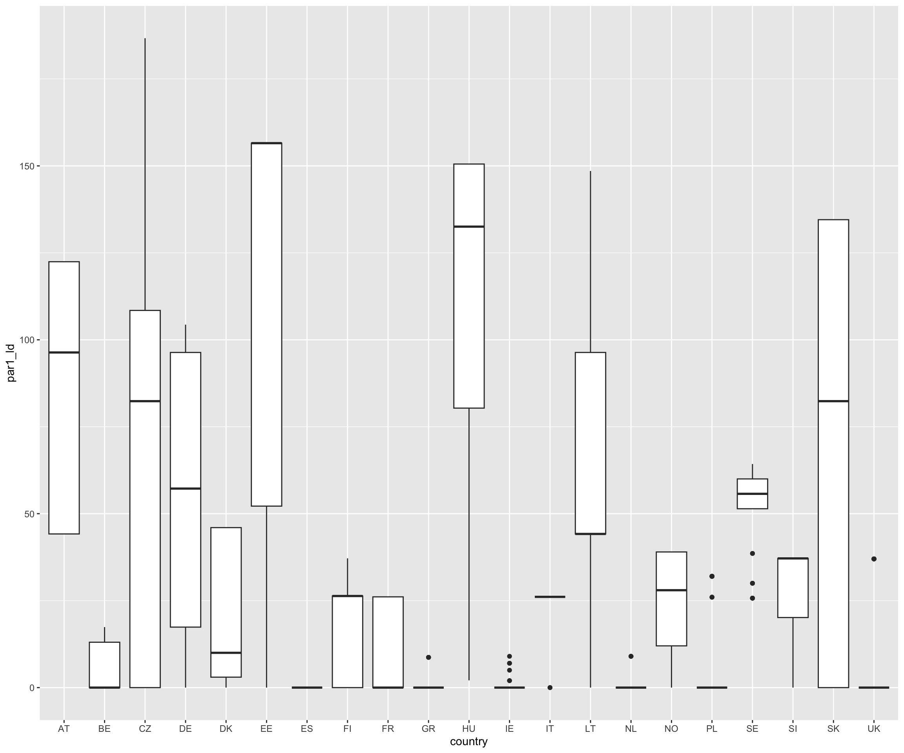
While we don’t see the year of the documented duration, we can easily observe that the countries’ policies have changed. Adding some color might also help to better grasp the number of measurements and their distribution.
Did you see that we layered a jitter plot on top of a boxplot? We used the + operator to layer them on top of each other. We can still freely customize either, for example, to use color coding for the countries.
ggplot(data=eplp, aes(x=year, y=par1_ld, color=country)) +geom_line() +ylab("Paid parental leave duration in months") +xlab("Years") +ggtitle("Paid parental leave duration in the course of the years")
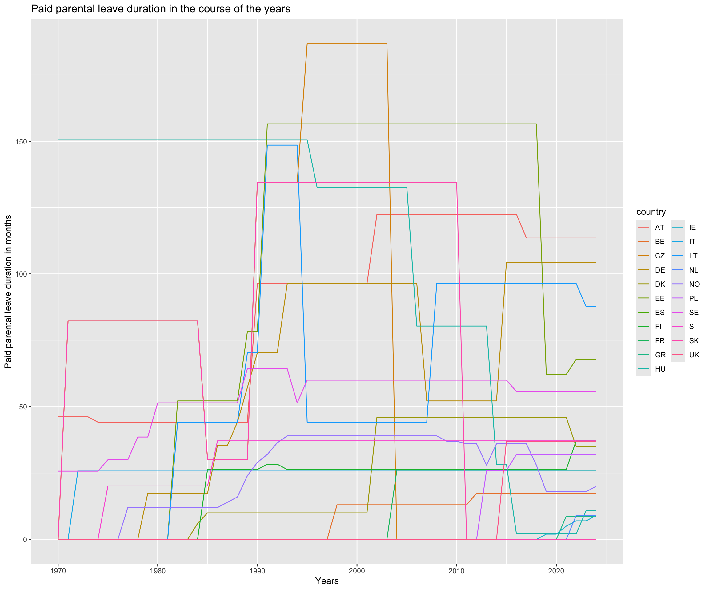
There is also a more straight-forward way to do this. We can use lab() which takes title, x and y as arguments.
ggplot(data=eplp, aes(x=year, y=par1_ld, color=country)) +geom_line() +labs(title="Paid parental leave duration in the course of the years",x="Year",y="Paid parental leave duration in months")
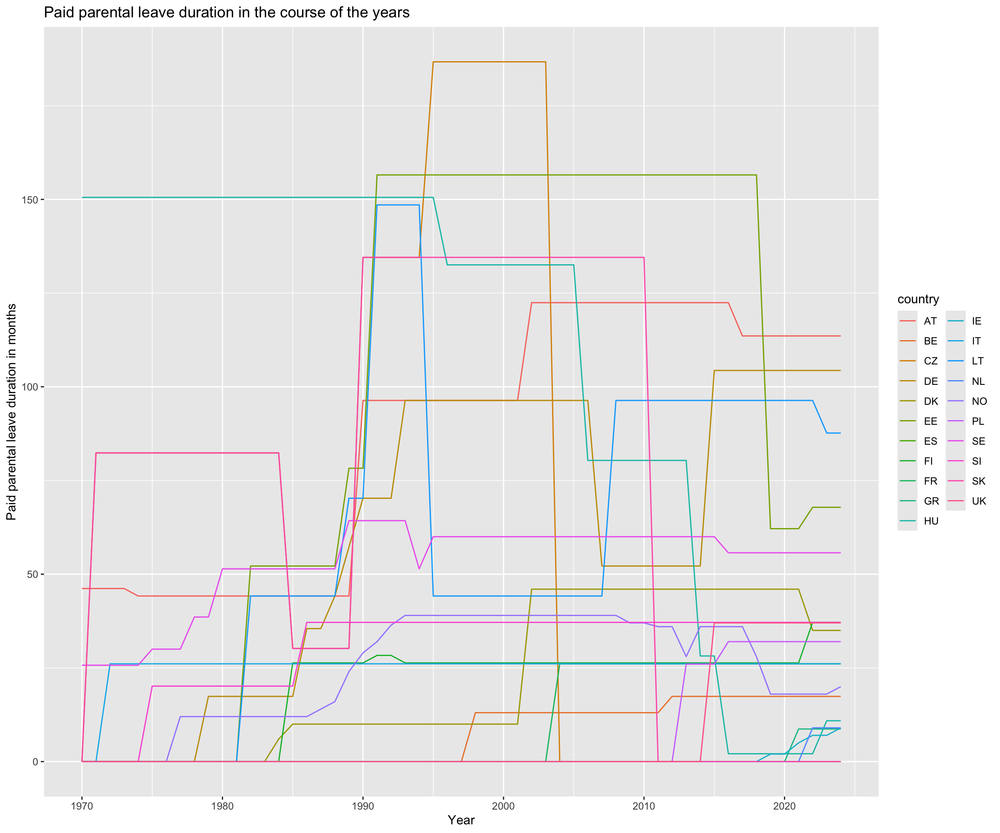
I am not sure about the visibility of the development yet! Let’s try to add facets to seperate the countries. A facet allows us to partition a plot into a matrix of panels.
ggplot(eplp, aes(x = year, y = par1_ld, group = country, colour = country)) +geom_line() +labs(title="Paid parental leave duration per country in the course of the years",x="Year",y="Paid parental leave duration in months") +facet_wrap(~ country)
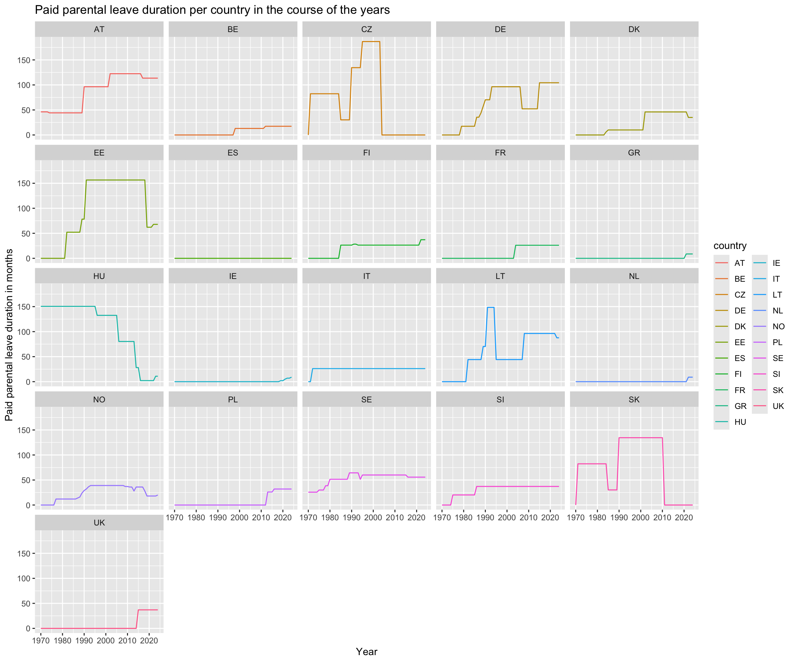
This looks better already! At least now, we can see how the paid parental leave duration changed per country in the course of the years.
Other ways
To present the results differently, R also provides other libraries, such as geomtextpath. Below is an example of its usage. We will list additional useful websites and/or libraries at the end.
library(geomtextpath)ggplot(eplp, aes(x = year, y = par1_ld, color = country)) +geom_labelsmooth(aes(label = country), fill ="white",method ="lm", formula = y ~ x,size =3, linewidth =1, boxlinewidth =0.4) +theme_bw() +guides(color ='none')
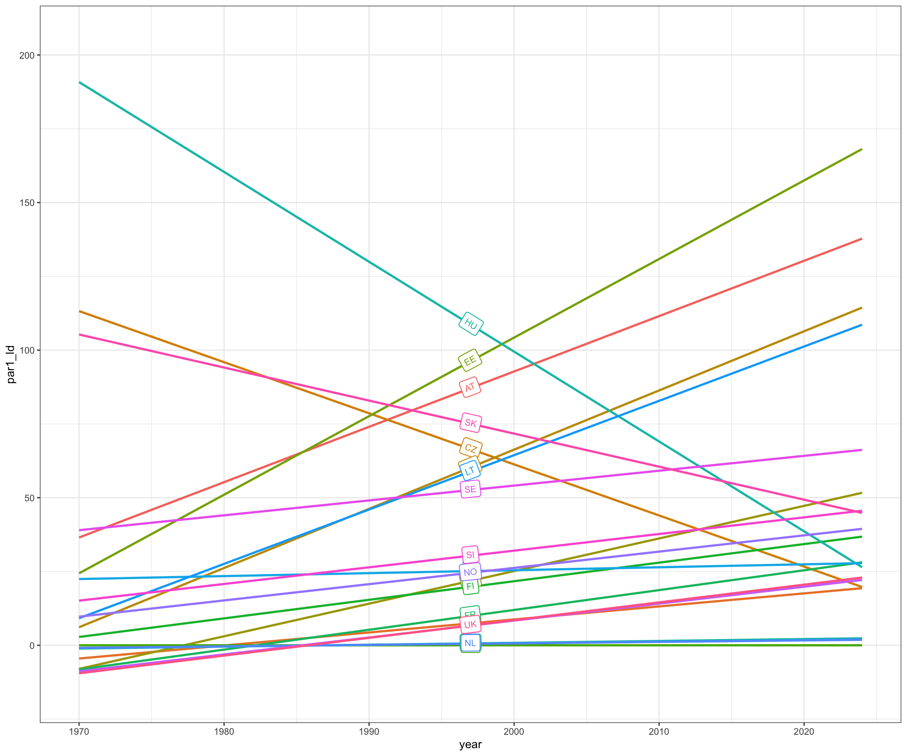
Building your plot – geom_bar()
Since we also want to explore whether specific parental groups (e.g., mothers or co-parents) have more or different rights to earn extra money during their leave, we need to find a plot that works well with categorical data. Bar plots are particularly useful in this case, and we can create one using geom_bar().
First, let’s focus on the x-value to identify who receives paid parental leave according to most policies.
eplp |>ggplot(aes(x = par1_for_whom)) +geom_bar()
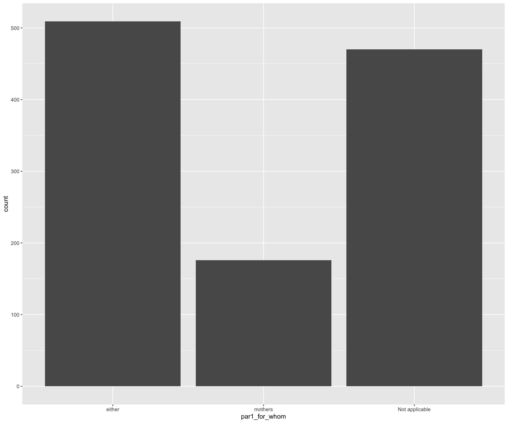
It seems like in most policies both parent can get parental leave. Great! Lets’ add some colors to see who can also work during their parental leave. We can do that using the fill argument in the aesthetics of geom_bar().
It appears that in policies where only mothers are eligible for paid parental leave, most do not allow them to work at the same time. However, it’s a bit difficult to assess this accurately since we don’t see the percentages.
Let’s calculate the percentages to get a better understanding! Instead of using ggplot2, we’ll stack some functions to achieve this. First, we’ll filter out the ‘not applicable’ cases, then count the remaining instances (par1_for_whom and par1_work). Afterward, we’ll group the data by the parent staying home (par1_for_whom)and calculate the percentages.
Now, we can plot the results using geom_bar(). To separate the portions of the stacked bar corresponding to each category and display them side-by-side, we can set the position argument to ‘dodge’. Additionally, we should set stat to ‘identity’ so that the bar plot directly reflects the values in the data frame.
percent_work_during_leave |>ggplot(aes(x = par1_for_whom, y = percent, fill = par1_work)) +geom_bar(stat ="identity", position ="dodge")
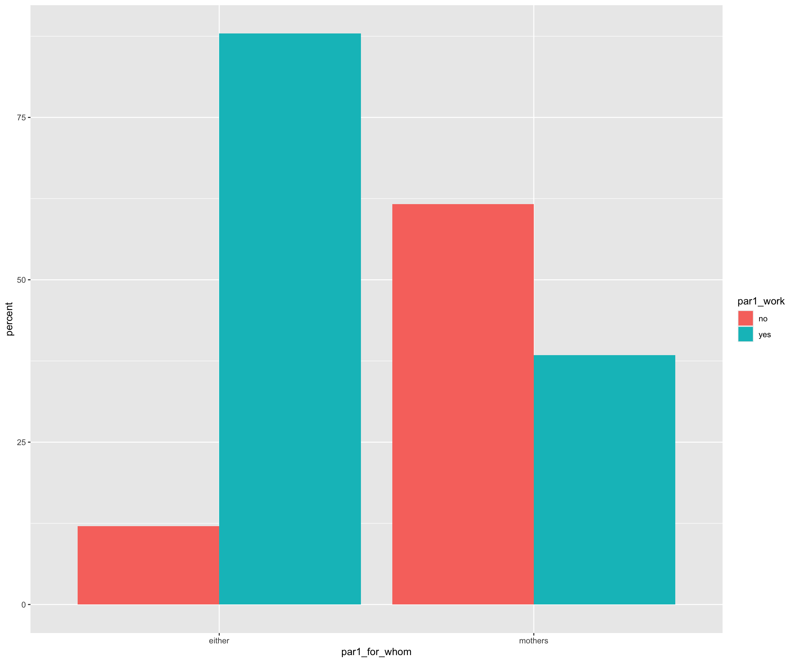
Let’s add a facet to seperate the two different groups (par1_work = “Yes” vs. par1_work = “No”).
percent_work_during_leave |>ggplot(aes(x = par1_for_whom, y = percent)) +geom_bar(stat ="identity", position ="dodge")+labs(title="Possibility to work/earn money during parts of the leave by person staying home",x="Parental leave for whom",y="Percent") +facet_wrap(~ par1_work)
I’m not sure if this provides the insights we need yet, but we can use this chance to experiment with the plot a bit. Let’s add a title and labels using labs(), and improve the appearance by applying themes. We can use theme_bw() to set a white background and theme(panel.grid = element_blank()) to remove the grid.
percent_work_during_leave |>ggplot(aes(x = par1_for_whom, y = percent)) +geom_bar(stat ="identity", position ="dodge")+labs(title="Possibility to work/earn money during parts of the leave by person staying home",x="Parental leave for whom",y="Percent") +facet_wrap(~ par1_work) +theme_bw() +theme(panel.grid =element_blank())
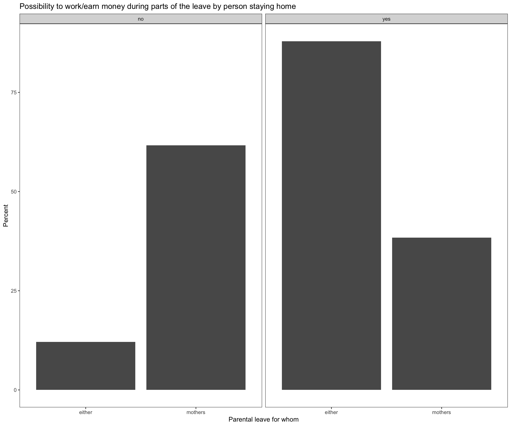
We can also make the plot more readable by increasing the font size using theme(text = element_text(size = 16)).
percent_work_during_leave |>ggplot(aes(x = par1_for_whom, y = percent)) +geom_bar(stat ="identity", position ="dodge")+labs(title="Possibility to work/earn money during parts of the leave by person staying home",x="Parental leave for whom",y="Percent") +facet_wrap(~ par1_work) +theme_bw() +theme(text =element_text(size =9))
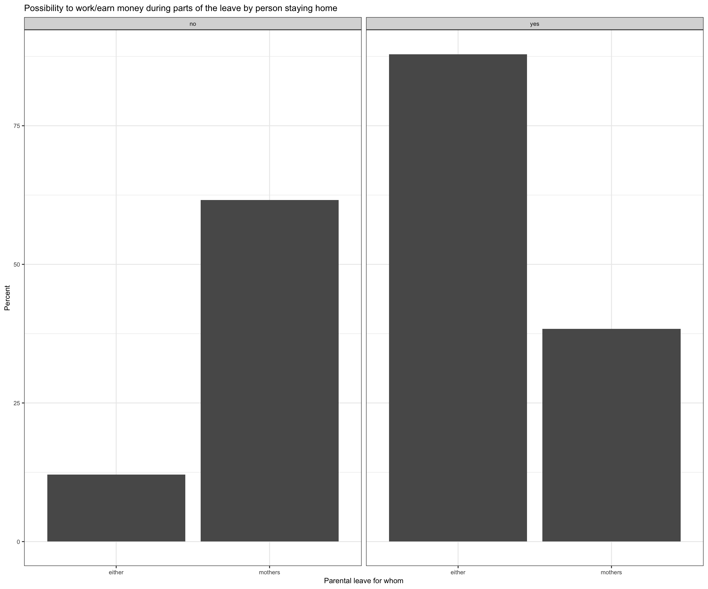
Trying more: To better address our research question, we may want to look at the percentages per country. To do this, we need to calculate the new percentages.
Now, we can use the layers we looked at today to create a clear overview of the policies per country and their answer on which parent is allowed to work during paid leave.
percent_work_during_leave_country |>ggplot(aes(x = par1_work, y = percent, fill = country)) +geom_bar(stat ="identity", position ="dodge")+labs(title="Possibility to work/earn money during parts of the leave by person staying home",x="Parental leave for whom",y="Percent") +facet_wrap(~ country + par1_for_whom) +theme_bw() +theme(text =element_text(size =9))
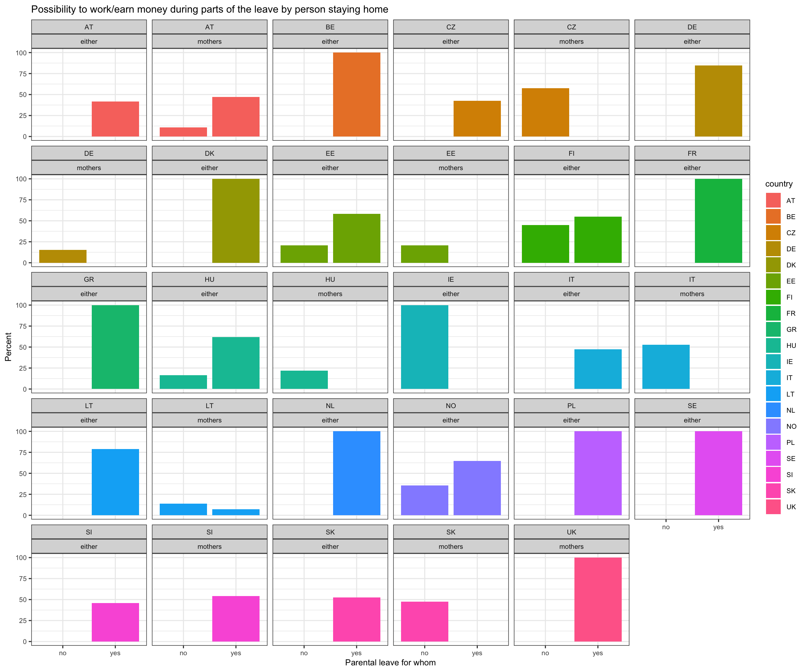
We may also consider removing the legend on the side to get more space for the plot. We can delete all legends by setting the argument legend.position of theme to “none”.
percent_work_during_leave_country |>ggplot(aes(x = par1_work, y = percent, fill = country)) +geom_bar(stat ="identity", position ="dodge")+labs(title="Possibility to work/earn money during parts of the leave by person staying home",x="Parental leave for whom",y="Percent") +facet_wrap(~ country + par1_for_whom) +theme_bw() +theme(text =element_text(size =9), legend.position="none")
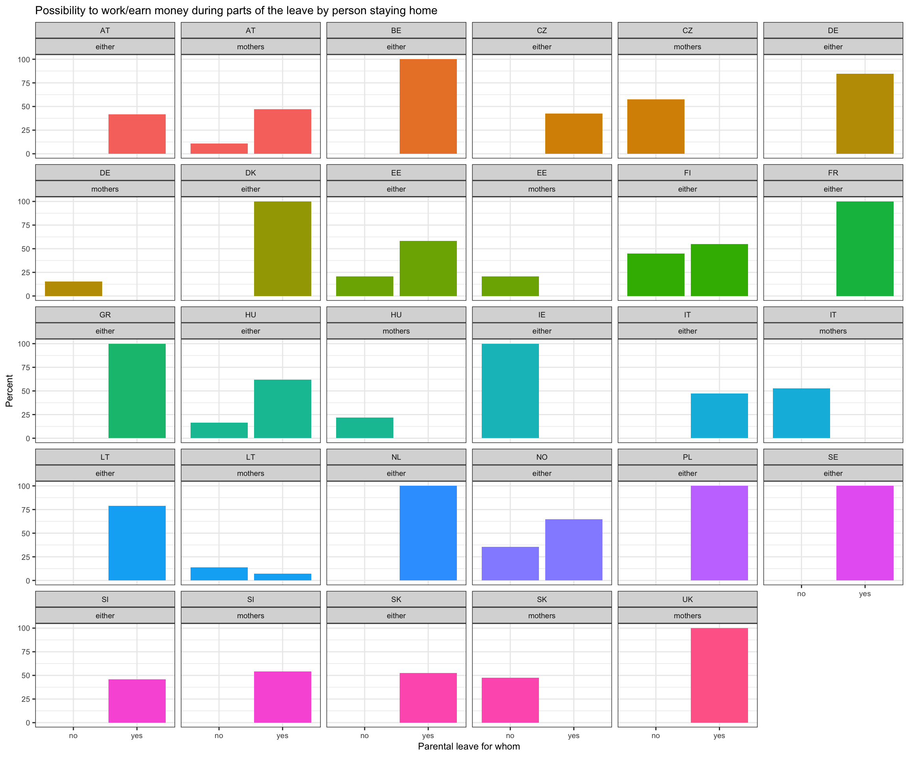
Last but not least, let’s save our plot using ggsave().
I cannot say whether this plot is particularly suitable, as we have multiple entries per year. However, it does provide an idea of what is possible using ggplot. Feel free to experiment further and explore how it can support your research!
Helpful links
Aside from the two sources that I cited at the beginning of the session, I can also recommend having a look at the following resources:
The R Graph Gallery offers a wide range of graphs created with R. Check out this website to find inspirations for your plots! They even offer the source code to reproduce them
Utrecht University also had a programming café about data visualization with R. Find their content here